Nesse tópico iremos falar sobre as nostalgias (brincadeiras, musicas, desenhos)... da Geração Y, os Millennials. Leia abaixo e aproveite
Brincadeiras são atividades lúdicas realizadas para diversão e aprendizado. Elas envolvem regras e objetivos que promovem interação social e desenvolvimento físico e mental. Além de entreter, brincadeiras estimulam a criatividade, a coordenação e a cooperação, sendo essenciais para o desenvolvimento de habilidades sociais e cognitivas. Aqui estão alguns exemplos de algumas brincadeiras da época dos Millennials:
Desenho feito no chão com giz ou pedra, onde o jogador deve pular em um pé só nos quadrados individuais e com os dois pés nos quadrados duplos, lançando uma pedra que não pode tocar as linhas do desenho ou cair no quadrado onde o jogador se encontra.
Dois jogadores seguram as extremidades de uma corda longa e a giram, enquanto um ou mais participantes pulam a corda, seja um de cada vez ou todos ao mesmo tempo.
Dois times competem em seus respectivos campos com o objetivo de capturar a bandeira do time adversário e levá-la de volta ao seu próprio campo sem ser tocado.
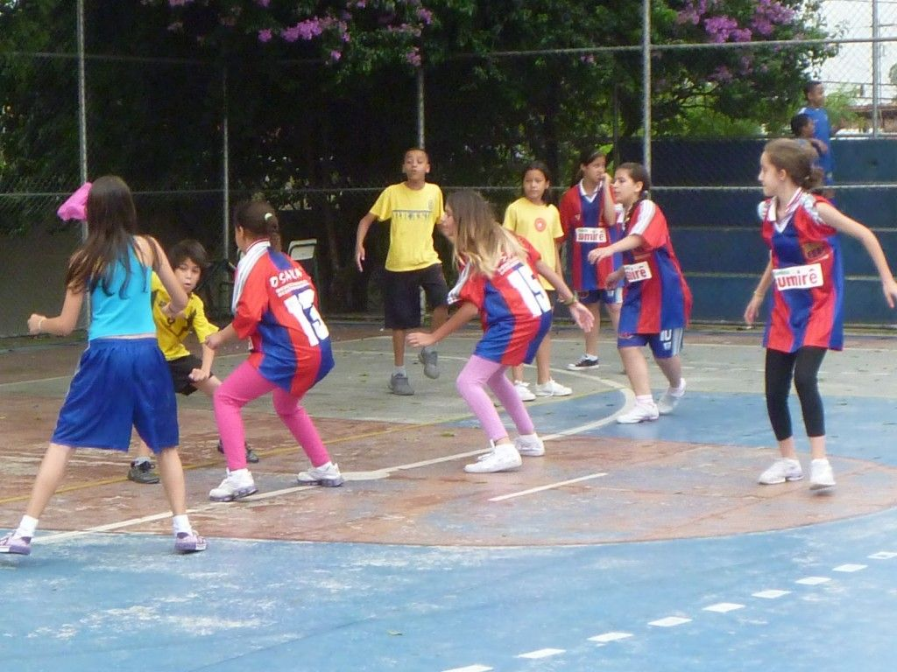Colocam-se cadeiras em círculo, em número menor que o de participantes. Com a música tocando, os jogadores caminham ao redor das cadeiras. Quando a música para, todos devem tentar sentar-se, e quem não encontrar uma cadeira sai do jogo. A cada rodada, uma cadeira é removida até restar apenas uma cadeira e dois jogadores.
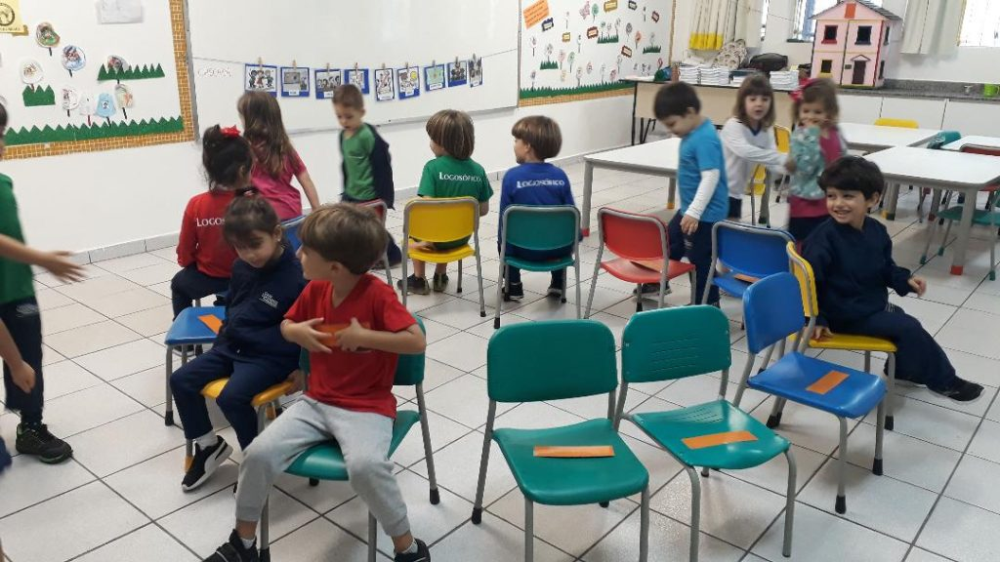Os jogadores entram em um saco, que pode ser de estopa, juta ou outro material, até a altura da cintura. O objetivo é pular dentro do saco até a linha de chegada. Ganha quem cruzar a linha primeiro.
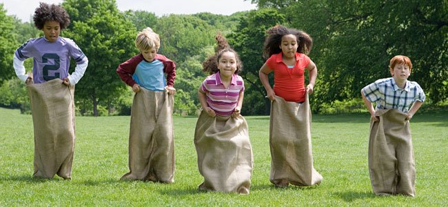Um jogador é escolhido para ser a “cabra-cega” e tem os olhos vendados. Ele deve tentar pegar os outros jogadores usando apenas o tato e a audição, enquanto os demais se movem para evitar ser pegos.
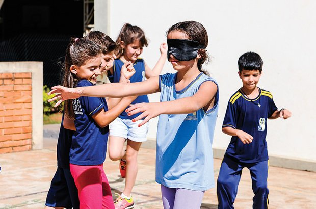Jogo em que o objetivo é atirar uma bolinha com o dedo para acertar outras bolinhas dentro de um círculo ou seguir um percurso pré-definido.
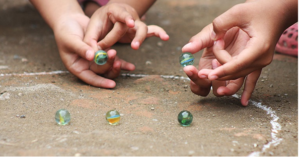Dois jogadores ficam posicionados, um de frente para o outro, com um elástico esticado ao redor de seus tornozelos, formando uma espécie de corda paralela ao chão. Um terceiro jogador deve então pular o elástico de várias maneiras, sem tocá-lo.
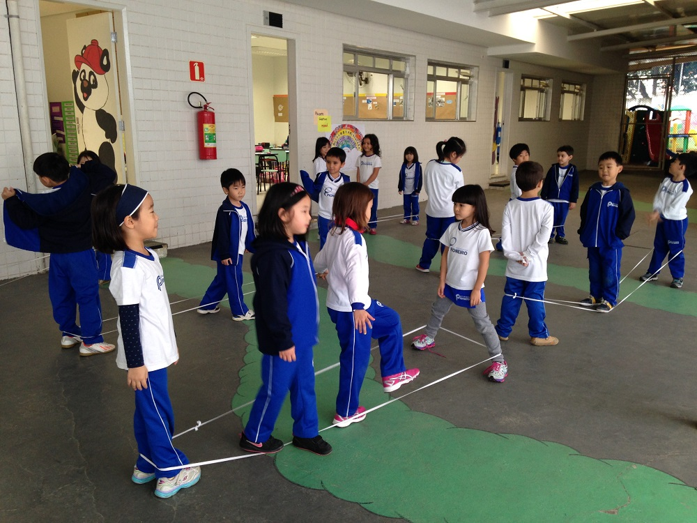O objetivo é lançar cinco pedrinhas ou saquinhos pequenos ao ar e apanhá-los de diferentes formas, seguindo uma sequência de movimentos sem deixar nenhum cair.
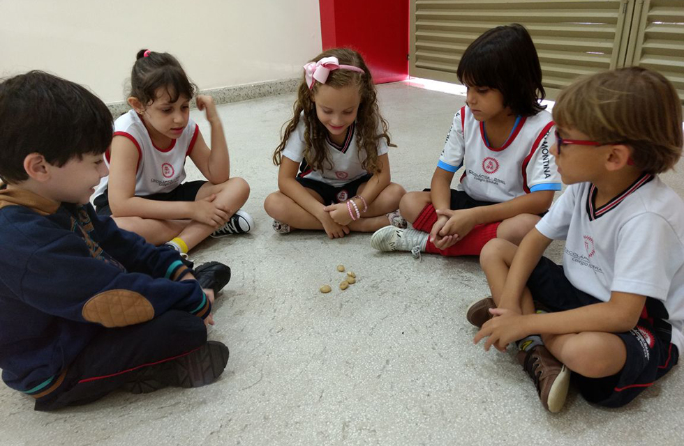Os participantes sentam-se em círculo com as mãos juntas e viradas para cima. Um jogador é escolhido para ser o portador do anel e finge passá-lo de mão em mão, mas deixa o anel na mão de alguém sem os outros perceberem. Depois, os demais devem adivinhar em qual mão está o anel.
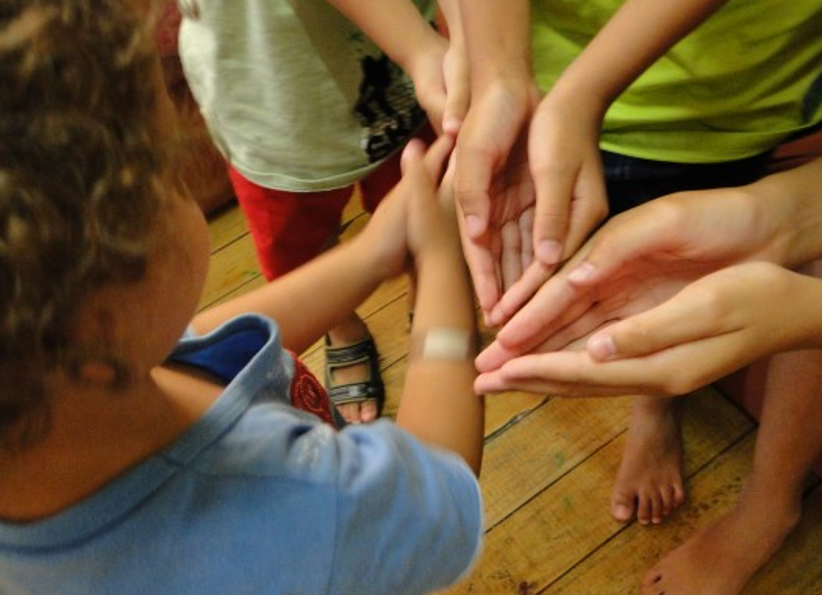Músicas são formas de expressão sonora que combinam ritmo, melodia e harmonia para criar experiências auditivas agradáveis e emocionantes. Elas desempenham um papel fundamental na cultura e no entretenimento, influenciando o estado de espírito, a memória e a identidade. Além de proporcionar prazer e relaxamento, a música também pode transmitir emoções, contar histórias e conectar pessoas. Abaixo alguns estilos de músicas escudados pela Geração Y :
O pop foi o estilo predominante nos anos 80, com artistas como Michael Jackson, Madonna, Whitney Houston e Prince alcançando grande sucesso e influência na época.
O rock também deixou sua marca significativa nos anos 80, com bandas como Guns N' Roses, U2, Bon Jovi, AC/DC e Metallica alcançando enorme popularidade durante a década.
O new wave surgiu nos anos 80 como um estilo que misturava elementos de rock, punk e eletrônica. Artistas proeminentes desse gênero incluíram Depeche Mode, Duran Duran, The Cure e New Order.
O hip hop teve um impacto marcante nos anos 80, com grupos como Run-DMC, Public Enemy e Beastie Boys ajudando a popularizar o gênero.
O R&B (rhythm and blues) também brilhou nos anos 80, com artistas como Whitney Houston, Michael Jackson, Lionel Richie e Luther Vandross se tornando ícones desse estilo musical.
Os anos 80 foram cruciais para a música jovem brasileira, preenchendo o espaço deixado pelos gêneros Tropicália e MPB. O pop-rock emergiu como a nova voz da juventude, expressando seus sentimentos e experiências. Surgiram então bandas marcantes como Legião Urbana, Titãs, Paralamas do Sucesso, Barão Vermelho, Capital Inicial, Biquíni Cavadão e Kid Abelha (anteriormente Kid Abelha e os Abóboras Selvagens). Também se destacaram Blitz, Ira!, Lobão e os Ronaldos, Nenhum de Nós, e João Penca e seus Miquinhos Amestrados, revelando talentos como Cazuza e Renato Russo.
Esse período foi um verdadeiro marco, tanto para os desenhos animados quanto para as séries de TV, que ainda são lembradas com afeto e saudade por quem cresceu assistindo a esses programas emblemáticos. Os personagens, enredos e músicas desses shows se integraram à cultura popular, impactando gerações e moldando a indústria do entretenimento.
Os anos 80 eram conhecidos por suas cores vibrantes e neon, que dominaram a moda até 1990. Também roupas "all-black" dominavam a área. Logo abaixo estão alguns exemplos.
O movimento punk, que surgiu no final dos anos 70 e início dos anos 80, trouxe uma visão pessimista sobre a sociedade, associando-se a um anarquismo político. Caracterizado por jaquetas de couro, camisetas de bandas, calças jeans surradas e calçados como tênis ou botas, o estilo punk também influenciou a moda das passarelas, com o uso marcante de couro, correntes, e as cores preto e vermelho.
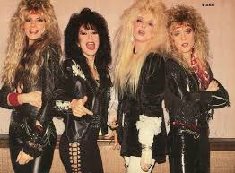Na década de 1980, a moda fitness foi fortemente influenciada pela cultura pop e pelo estilo aeróbico. Roupas brilhantes, leggings justas, tops cortados e shorts de cintura alta eram comuns. Marcas como Adidas e Nike começaram a dominar o mercado, introduzindo inovações em tecidos e designs. A moda fitness desse período também foi marcada por tons coloridos e chamativos, além de estampas psicodélicas e tecidos leves e elásticos, garantindo liberdade de movimento e refletindo a influência da contracultura.
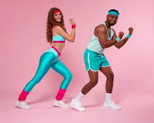A jaqueta de couro, popularizada pela cultura rock, tem suas origens no início do século XX, quando foi
utilizada como uniforme para pilotos de avião durante a Primeira Guerra Mundial. Ela protegia os pilotos do
frio e do vento, além de ser resistente a rasgos e perfurações.
Com o tempo, a jaqueta de couro passou por diversas transformações e ganhou destaque entre músicos e fãs de
rock. Entre as décadas de 1960 e 1980, tornou-se um item icônico no guarda-roupa de bandas como Elvis
Presley e Ramones. Nos anos 1980, a jaqueta de couro se tornou especialmente popular entre os fãs de heavy
metal, sendo usada por bandas como Metallica e Iron Maiden. Durante esse período, os modelos perfecto e
oversized de shape arredondado estavam em alta.
O street wear é um estilo que começou na década de 1970 na Califórnia, refletindo a cultura e a vivência dos jovens urbanos. Inicialmente influenciado pelo surf (A influência naquela época era o cotidiano baseado no surf, fazendo com que as roupas trouxessem muito dessa inspiração nas estampas, nos cortes e nas modelagens.) O estilo evoluiu nos anos 1980 com a ascensão do skate e do hip-hop, incorporando elementos de grafite e dança. A marca Stüssy, considerada a primeira do gênero, ajudou a definir essa estética.
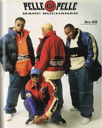Influenciados pelo estilo extravagante dos anos 80, grandes designers trazem referências dessa época em suas
criações atuais e modernas, voltadas para quem tem muita personalidade e estilo.
No cenário da moda, elementos como cintos largos, mangas bufantes e saias balonê anteciparam as tendências
internacionais desenvolvidas pela Saint Laurent.
A partir de 1980, houve um verdadeiro marco na história dos maiôs. Nesse ano, os modelos lisos, especialmente
em cores neon, passaram a compor os looks usados em festas à beira de piscinas, tornando-se peças
glamourosas para criar visuais mais elegantes.
O Brasil, sendo um país tropical com temperaturas elevadas e mulheres extremamente empoderadas, não ficou
para trás nessa tendência e foi responsável pela criação da famosa "tanga" nos anos 70.
Por Kauã Silva , Em SENAI - Paraguaçu Paulista
30/08/2024 14:03.
Fontes:
https://www.revistabula.com/18465-40-brincadeiras-que-so-fazem-sentido-para-quem-cresceu-nos-anos-1980-e-1990/
https://muralzinhodeideias.com.br/nostalgia-brinquedos-que-marcaram-os-anos-80-e-90/
https://www.letras.mus.br/blog/musicas-nacionais-anos-80/
https://www.maioresemelhores.com/desenhos-dos-anos-80/
https://exame.com/pop/relembre-os-desenhos-e-series-que-fizeram-sucesso-nos-anos-80/